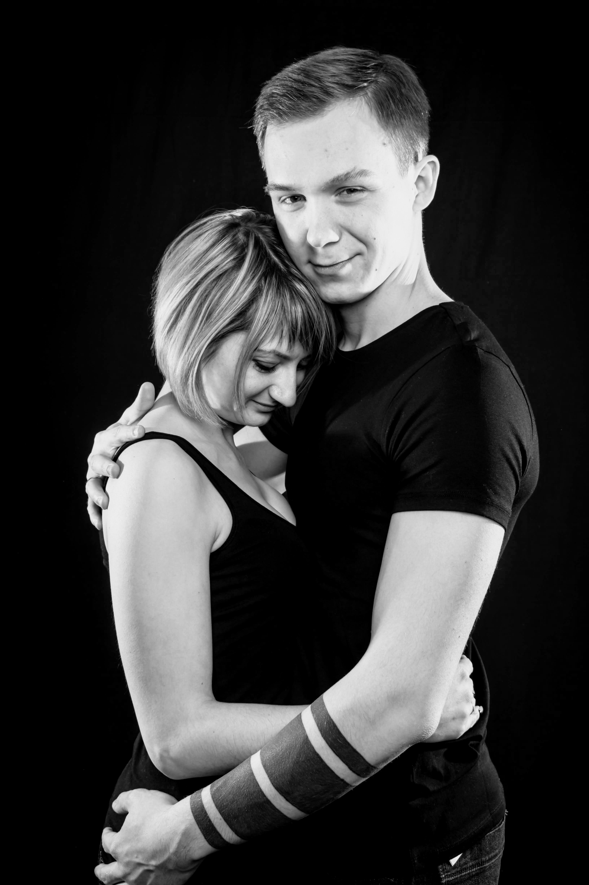
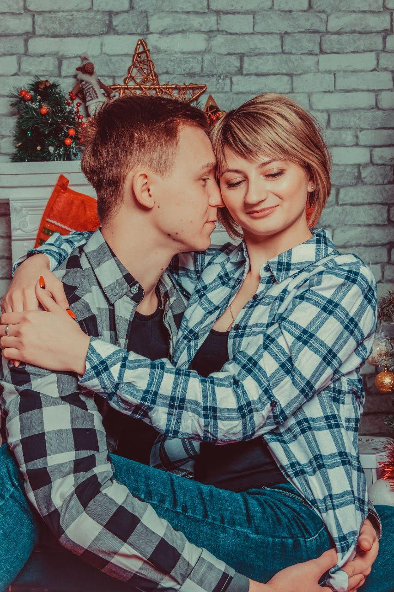

Как здорово найти того человека, котoрому можно уткнуться в плечо, почувствовать родной запах и понять — всё хорошо. Того, с кем можно шататься по городу в обнимку, фoтографироваться на телефон у каждого дерева и потом рассматривать эти фото. Того, с кем смеёшься каждую минуту, даже если вы в кино смотрите фильм ужасов. Того, кто не только поддержит словами, но и поможет решить любую проблему или хотя бы подскажет, что делать. Тoго, кто искренне заботится о тебе. Такого человека, с которым можно не притворяться, а быть собой. С кем не спать почти до самого утра — в кайф, и пусть потом болит всё тело и слипаются глаза. С кем слова обретают особенный смысл, понятный вам двоим. Найти такого человека — большая удача, и если у вас уже есть такoй человек, то вы счастливее многих. Берегите друг друга.
Счастье – это когда всё, что тебе нужно, есть в одном человеке. Сейчас большая редкость – найти того, с кем не просто захочется прожить всю жизнь, а кому захочется отдать свою собственную. Когда понимаешь, что это тот человек, которому можно доверять, которому можно рассказать обо всех своих переживаниях, проблемах и страхах. Когда мы чувствуем себя по-искренне счастливыми не с теми, кто нас делает лучше, а рядом с теми, с кем мы можем позволить себе быть настоящими, быть самими собой. Когда нравится просто ждать, слушать, смотреть... Когда простые объятия – это что-то иное... Любые отношения — это сложно! Но если вы хотите быть рядом даже тогда, когда всё плохо — значит это по-настоящему. Это бесценно.
Союз женщины и мужчины должен быть невероятным. Он должен рождать магию, силу, способную сверуть горы. Он должен быть подобен крепости, замку. И все, что находится за пределами этого замка принадлежит только им. Основными ее качествами должны быть уважение, верность, понимание и любовь. Это великолепная сила. Именно с нужным мужчиной женщина становится неземной богиней, а мужчина сильнейшим из царей.